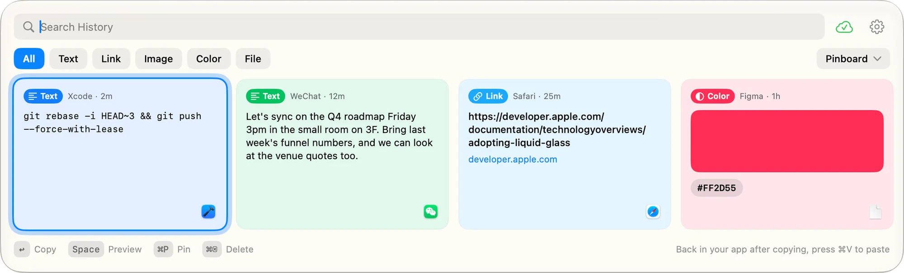
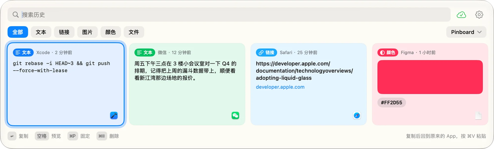
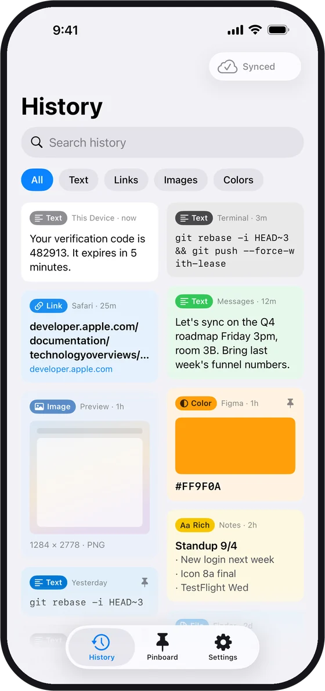
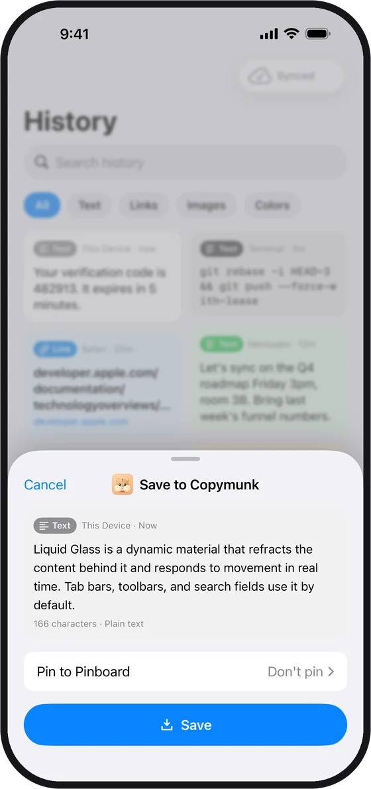
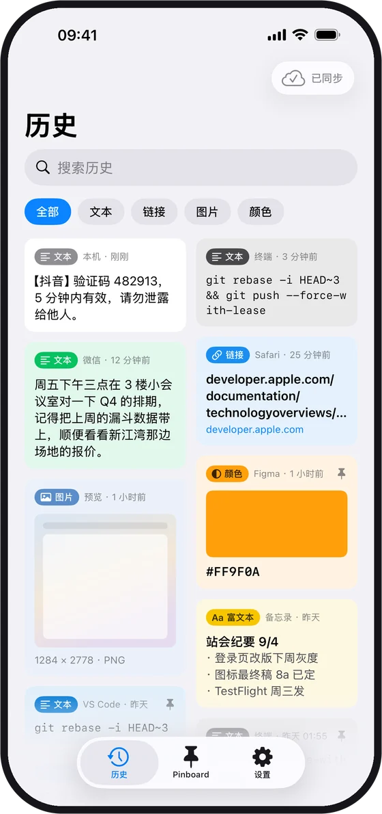
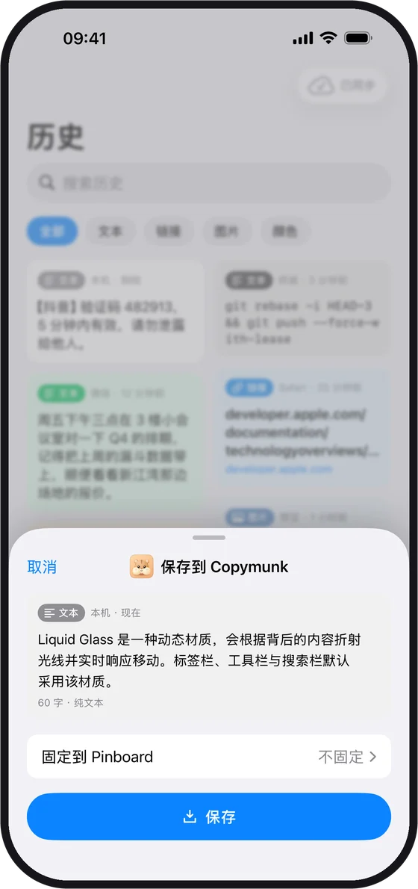

Everything you copied, one key away.
复制过的一切，一键即达。
An open-source clipboard manager for Mac, iPhone and iPad. Like a chipmunk, it tucks away everything you copy, so you never lose it again.
开源的剪贴板管理工具，支持 Mac、iPhone 和 iPad。像花栗鼠一样，把你复制过的东西都囤起来，再也不会丢。
Download for free免费下载 All platforms全部平台
Free · Mac, iPhone and iPad · No account · Open source (GPLv3)
免费 · Mac、iPhone、iPad 通用 · 无需账号 · GPLv3 开源


Mac
Copymunk lives in the menu bar and quietly saves everything you copy. Your history slides up right above the Dock, ready to search with the keyboard.
Copymunk 常驻菜单栏，默默记下你复制的每一样东西。历史记录从 Dock 上方浮起，用键盘就能搜索和选取。
Type to search, ← → to move, Return to put it back on the clipboard, then paste with ⌘V.
输入即搜索，← → 切换，回车放回剪贴板，再按 ⌘V 粘贴。
Text, rich text, links, colors, images and files, each shown as a card with the app it came from.
文本、富文本、链接、颜色、图片和文件，每条都是一张卡片，标着来自哪个 App。
Keep the clips you reuse on Pinboards. Clearing history never touches them.
常用的内容固定到 Pinboard，清空历史也不会动到它们。
Off by default. Turn it on to sync through your own iCloud or a folder you pick.
默认关闭。打开后通过你自己的 iCloud 或你选的文件夹同步。
Concealed content from password managers is never recorded.
密码管理器标记为隐藏的内容，一律不记录。
No Accessibility or input monitoring access. Copymunk never asks for privacy permissions.
不需要辅助功能或输入监控权限，Copymunk 从不申请任何隐私权限。
iPhone & iPad
History syncs through your own iCloud, so you can search it anywhere and tap any clip to copy it again.
历史通过你自己的 iCloud 同步，随时搜索，轻点任意一条即可再次复制。




Privacy
隐私
Copymunk is free on Mac, iPhone and iPad. One App Store listing covers all three, and they sync through your own iCloud.
Copymunk 在 Mac、iPhone 和 iPad 上都免费。App Store 上是同一个 App，三端通用，通过你自己的 iCloud 同步。
macOS 14 Sonoma or later
macOS 14 Sonoma 或更高版本
iOS 18 / iPadOS 18 or later
iOS 18 / iPadOS 18 或更高版本
Prefer to build it yourself? The full source is on GitHub.
想自己编译？完整源码在 GitHub。